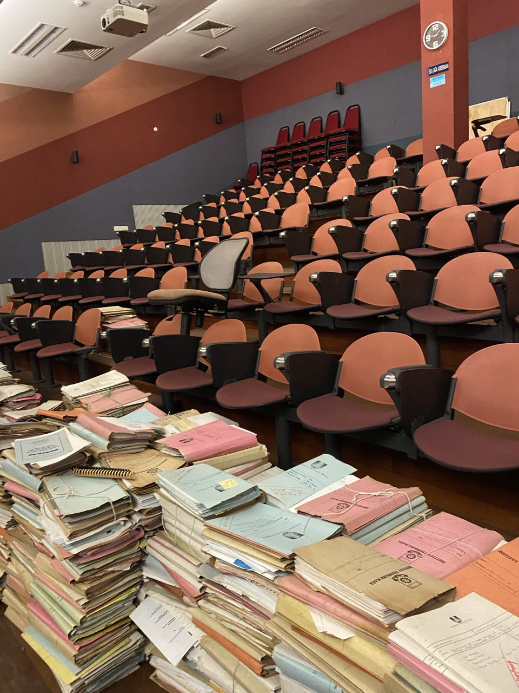
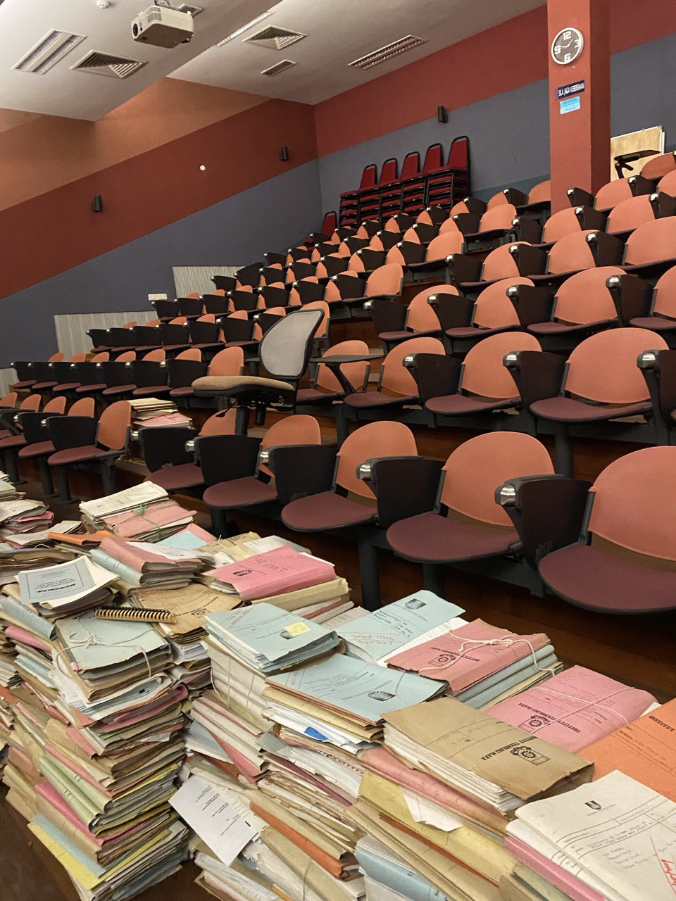

Freelance Work
I started my freelance work by offering my own design services, where clients pay me to create creative and visually appealing designs based on their needs. This experience helped me improve my creativity, communication skills, and ability to manage client expectations.
Some of the design services that I offer include:
- Wedding cards
- Menu design
- Poster design
- Banner design
Internship
I completed my internship at UiTM Shah Alam under the Strategic Administration and Human Resource Division (Bahagian Pentadbiran Strategik & Sumber Manusia). This internship took place from 28th July 2025 until 19th September 2025.
During my internship, I gained exposure to administrative work, documentation, and human resource management processes. This experience helped me understand real working environments and improve my professionalism.

 

Work Experience
I also have work experience at a kiosk selling drinks. This job taught me how to communicate effectively with customers and handle transactions responsibly.
Working at the kiosk helped me develop teamwork skills, time management, and the ability to work efficiently in a fast-paced environment.